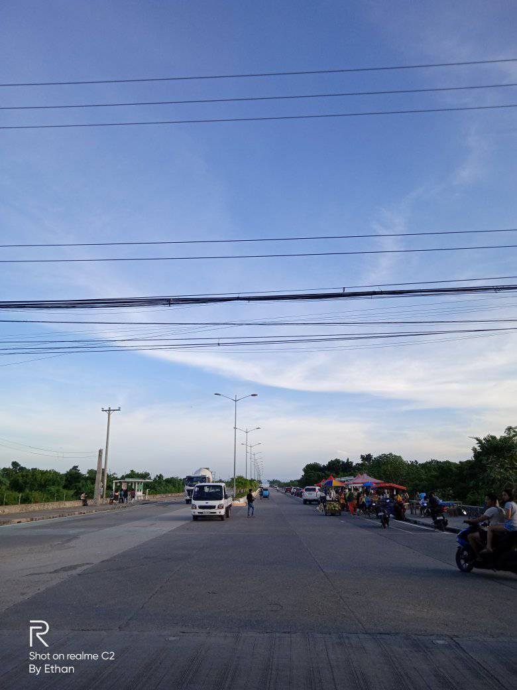

Discovering Centennial Road's Scenic Wonders in Cordova, Cebu In addition to its natural beauty, Cordova, a little town in the Philippine province of Cebu, is known for the Centennial Road, a route of historical significance and stunning views. This section of road offers visitors looking for breathtaking vistas and a window into Cordova's past and present a picturesque path in addition to connecting other areas of the town.
Because it was built to honor a momentous occasion—the 100th anniversary of the Philippines' independence—the Centennial Road is particularly dear to the people of Cordova. Constructed as an emblem of advancement and solidarity, the route bears witness to the town's illustrious past and ongoing pursuit of expansion and advancement. The expansive views from Centennial Road are among its most seductive features. As they follow this route, they are treated to breathtaking views of the surrounding area, which is a charming blend of verdant foliage, undulating hills, and ocean views that come together to form an enthralling tapestry of breathtaking natural beauty In addition to being a route for passengers, Cordova, Cebu's Centennial Road provides a point of entry to historical significance, natural beauty, and cultural experiences. Its calming atmosphere and gorgeous scenery entice exploration, revealing the town's historical background while highlighting its contemporary attractiveness. A trip down the Centennial Road is sure to leave you with unforgettable and rewarding experiences, regardless of your interests—nature lovers seeking picturesque views, history buffs fascinated by significant landmarks, or tourists keen to immerse themselves in the local way of life.